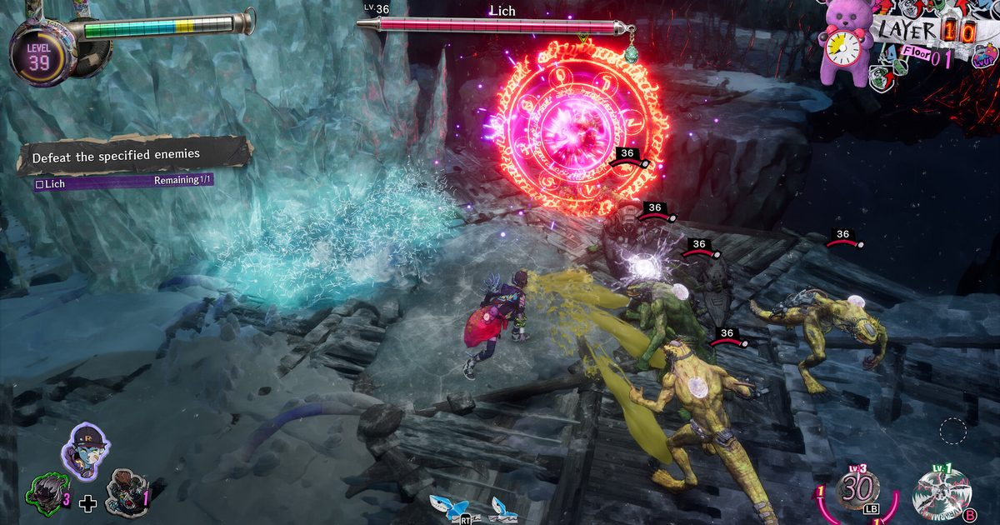

2026-10-21 · 单机深读
世嘉宣布全球共同发行的动作 RPG《愚者不灭（Stupid Never Dies）》10 月 22 日登陆 PS5 与 Steam（Steam 页面按区域显示 10/21–10/22），国区 198 元，支持简体中文与日文语音；数字豪华版《Glorious Idiot Edition》8,789 日元，附带 48 小时提前游玩权。 开发方 GPTRACK50 是前《鬼泣》《龙之信条》系列制作人小林裕幸领衔的新工作室，这是他们的第一件成品。 主角是一只这辈子没打过架的废柴僵尸，为了复活在冷库里冻死的女大学生，要用「身体改造」把机械装置埋进自己身上，用「异噬」吞掉敌人、抢走对方的能力并改变自己的外貌，一路杀进异世界地下城最深处。 标语是「噬咬、掠夺、逆袭」。而在所有宣传里最值得琢磨的，是那四个字：爆速成长。

免费试玩版已上线，包含正式版开头约 2 小时的内容，存档可继承。
这是本作最容易被当成营销话术、实际上却是个真设计决策的地方。 绝大多数带地城循环的动作 RPG 遵循同一条规则：每次重来，能力归零，用一局的时间重新攒起来。这条规则不是缺陷，它是这类游戏的张力来源——你怕死，因为死了要重攒。 而《愚者不灭》明确写了另一条规则：你回来越多次，变强的速度越快。把「重置」改成了「复利」。
这一步的收益很直观：它把一个「废柴僵尸下克上」的故事，直接做成了成长曲线的形状。你不需要在剧情里被告知戴维变强了，你会在第三次进地城时发现自己是两小时前那个怂货的十几倍。 风险同样直观：如果复利速度压过了关卡设计，中期就会从「爽」滑向「无聊」——你不再是打赢了敌人，而是走过去。这类作品最容易翻车的地方不是开局，是第 10 到第 20 小时。
很多游戏把「僵尸」当作外观设定：血厚、能再生、换一套腐烂模型。本作把僵尸的前提条件直接翻译成了机制。 僵尸不怕失去肢体——于是「身体强度」和「身体完整性」变成了两个可以对冲的资源：你把手臂换成导弹发射器，得到的是远程火力，付出的是那条手臂。 异噬同理：它吞的不是经验值，是对方的身份。你变强的方式不是升级，是把敌人的 build 抢过来变成你的 build。
这两条合在一起，构成了一个很少见的正反馈：你越强，你的身体就越不像人；而越不像人，你能装的东西就越多。「废柴僵尸为了心上人把自己拆得七零八落」——这句剧情梗概和它的核心系统其实是同一句话。 这在今天是稀缺的：大部分动作 RPG 的世界观是贴在数值系统外面的贴纸，而这里世界观就是数值系统本身。
把 GPTRACK50 的成员表摊开看，这个项目的反差感很强：一支出身《鬼泣》与《龙之信条》的动作游戏队伍，首作的主角不是酷哥，是一只被怪物和人类一起当笑话看、连架都没打过的怂僵尸；故事动机不是复仇也不是使命，是一见钟情。 这不是能力退步，是有意的换赛道。动作游戏做「从弱到强」其实比做「一上来就强」难——前者的前两个小时必须让玩家忍受笨拙，而笨拙本身就劝退。 所以「爆速成长」这四个字同时也是一份承诺：它告诉你，笨拙期很短，而且每一分钟都会被连本带利还回来。
代价是它会被按《鬼泣》班底的标准来审视。玩家不会问「一只僵尸打得动不动」，会问「手感对不对」。这是 GPTRACK50 首作绕不开的评价门槛。
值得单独记一笔的是发售姿势。2 小时试玩、存档继承、豪华版 48 小时提前解锁——这套组合在 2026 年已经不算稀奇，但10 月 22 日这天，同样定价在 200 元档的两款日本游戏同时这么做了：另一边《最终幻想：共鸣》放出的是完整第一章、3–5 小时、同样存档继承。 两家都在处理同一个问题：当玩家对「花了钱才知道好不好玩」的容忍度归零，试玩版就从宣传物料变成了定价的一部分。 对玩家是好事；对只有两小时就要说服人的作品，是压力。
我们的期待值：7.9 / 10（概念与设计 8.6 · 动作班底 8.4 · 长线风险 7.0 · 定价与体量 7.5）
我们的观察：本作最扎实的部分不是「僵尸」这个题材，而是它把题材的两个前提——可以失去肢体、可以吞掉别人——分别翻译成了可玩的资源系统。这在今年的一堆「XX 动作 roguelite」里是少见的。《鬼泣》班底做废柴主角，本身就是一次设计上的自我设限，而设限往往出好活。
我们的观点：真正决定它成败的是第 10 到第 20 小时。复利型成长最大的敌人不是难度，是无聊；如果「每次回来都更强」没有配上「每次回来敌人也更难」的同步曲线，它会在爽完之后迅速塌成一条平线。我们建议不要被首发的动作爽度说服，等第一批通关评测出来再看中后期曲线。
我们的案例 / 对比：
| 作品 | 变强的方式 | 重来时保留什么 | 代价是什么 |
|---|---|---|---|
| 愚者不灭 | 吞噬敌人夺能力 + 身体改造 | 成长速度本身（复利） | 身体完整性、外貌的人味 |
| 典型 roguelite | 局内拾取与构筑 | 少量永久解锁 | 本局全部进度 |
| Prototype | 吸收敌人获取能力与记忆 | 全部（无循环） | 主线线性，无重来 |
| Prey（掠食） | 拟态与神经能力树 | 全部（无循环） | 资源稀缺，能力互斥 |
| 龙之信条（同制作人） | 职业等级 + 随从系统 | 全部（无循环） | 职业切换成本高 |
我们的实验（试玩版那 2 小时该盯的三个指标）：
《愚者不灭》最吸引人的地方，是它把一个 B 级片设定认真当成设计约束在解：僵尸能失去肢体，于是改造有了代价；僵尸靠吞噬扩张，于是变强等于夺走别人的身份；主角从最弱开始，于是「爆速成长」必须真的快，否则前两小时没人撑得住。 它现在的悬念不在开局的爽度，而在中后段——复利型成长曲线一旦压过关卡设计，快感会迅速贬值。 我们的建议很直接：先花两小时玩免费试玩版，重点测上面那三个指标；198 元的决定留到首批通关评测出来之后再做。如果你只是想看《鬼泣》班底能把一只怂僵尸做成什么样，这两小时本身就值了。